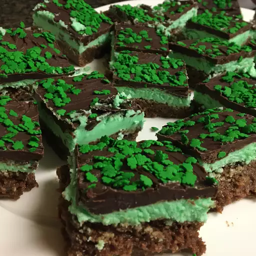

Home
Document
Luck o' the Irish Brownie

Description
Luck o' the Irish Brownies are rich, fudgy treats with a festive twist! Infused with a hint of mint and topped with green frosting or sprinkles, they're perfect for celebrating St. Patrick’s Day. These brownies bring a bit of magic to every bite.
Perfect for parties, bake sales, or a fun holiday dessert, Luck o' the Irish Brownies are as eye-catching as they are delicious. Whether you're sharing them with friends or keeping a few for yourself, these festive brownies are sure to spread a little Irish cheer!
Ingredients
- 4 (1 ounce) squares unsweetened chocolate
- 2 cups white sugar
- 1 cup margarine, softened
- 3 large eggs
- 2 1/2 teaspoons vanilla extract
- 1 cup all-purpose flour
- 4 cups confectioners' sugar
- 1/2 cup butter, softened
- 2 tablespoons milk, or as needed
- 6 drops green food coloring
- 1 1/3 cups semisweet chocolate chips
- 1 tablespoon vanilla extract
Directions
- Preheat the oven to 350 degrees F (175 degrees C). Grease a 9x13-inch baking dish.
- Place unsweetened chocolate in a microwave-safe cup or bowl. Heat in the microwave, stirring at 15-second intervals, until chocolate is smooth. Allow to cool slightly.
- Transfer melted chocolate to a large bowl. Stir in sugar and margarine until smooth. Beat in eggs one at a time until incorporated, then stir in 2 1/2 teaspoons vanilla. Stir in flour just until blended. Pour batter into the prepared dish and spread evenly.
- Bake in the preheated oven until the surface appears dry and the sides are beginning to pull away from the edges of the pan, 20 to 25 minutes. The brownies may look more like cake and may jiggle slightly in the center — this is normal. Remove from the oven and cool in the pan set over a wire rack.
- To make the middle layer, beat together confectioners' sugar and 1/2 cup butter in a large bowl with an electric mixer until well combined. Add milk as needed to get a spreadable consistency. Stir in peppermint extract and green food coloring until incorporated. Spread over the cooled pan of brownies. Refrigerate for 30 minutes.
- Place chocolate chips and 6 tablespoons butter in a microwave-safe bowl. Heat in the microwave until melted, stirring every 20 seconds until chocolate is smooth. Stir in 1 tablespoon vanilla until incorporated. Pour over chilled brownies and quickly spread to cover the surface. Cool again in the refrigerator until firm, about 10 minutes. Cut into squares and serve.